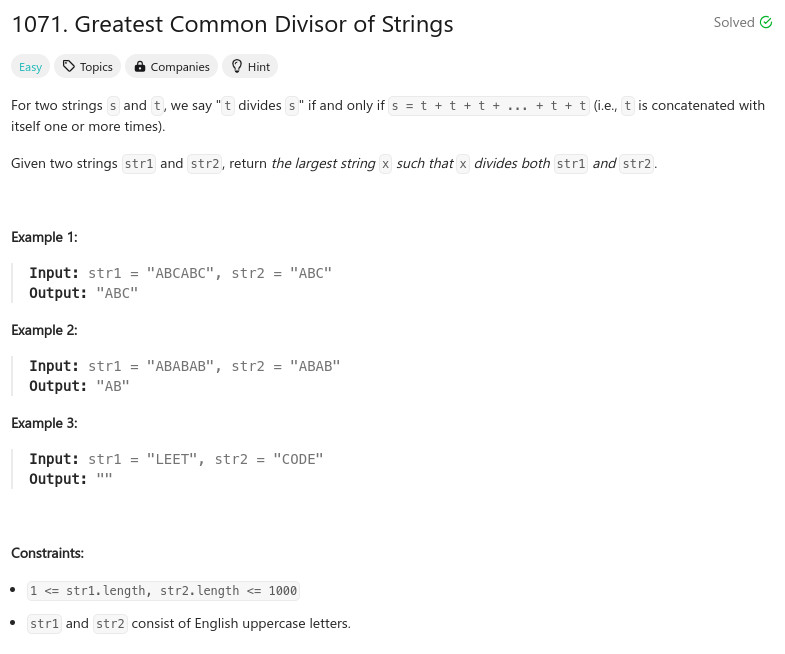

參考資訊：
https://www.cnblogs.com/grandyang/p/14537276.html
題目：

class Solution {
public:
string gcdOfStrings(string str1, string str2) {
return (str1 + str2) == (str2 + str1) ? str1.substr(0, gcd(str1.size(), str2.size())) : "";
}
};